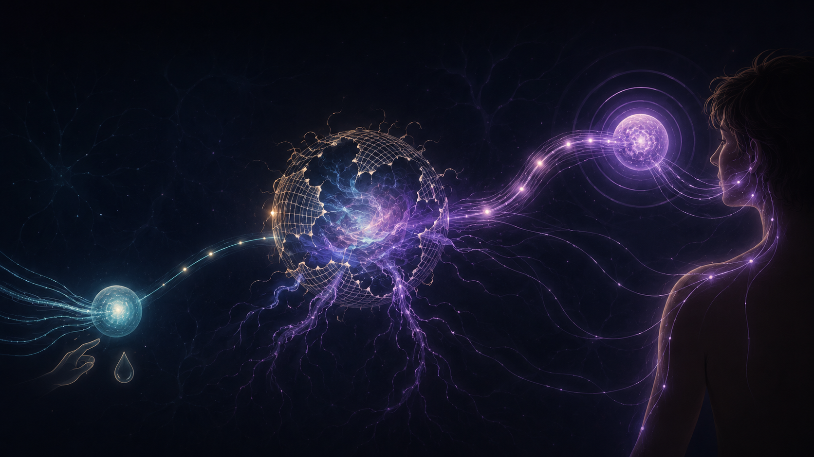
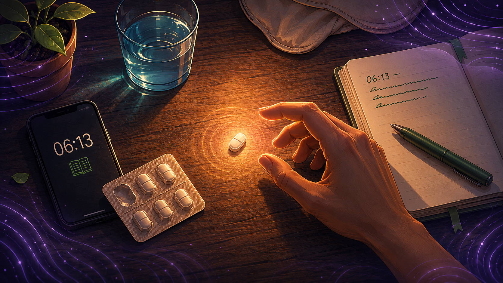

30 years living with migraine · Founder of Migraine Companion
🔬 22 peer-reviewed sources · Published in Annals of Neurology, Brain, Cephalalgia, Headache, Neurology, Scientific Reports, Journal of Headache and Pain, Frontiers in Neurology
Last reviewed: May 20, 2026
Key Takeaways
- Allodynia is pain from a stimulus that should not cause pain — touch, light pressure, mild temperature change. It affects 40–70% of people with migraine. One landmark population study found a prevalence of 63%.
- Three types exist: dynamic (movement across skin), static (steady pressure), and thermal. Most people who have allodynia have more than one.
- The cause is central sensitization — a hyperexcitable state in pain-processing neurons of the brainstem and thalamus. The skin itself is normal. The filter has broken.
- Timing changes everything: triptans work in 93% of attacks treated before allodynia, in 15% of attacks treated after. The window is 20 to 120 minutes from headache onset.
- Allodynia predicts chronification. Its presence raises the risk that episodic migraine progresses to chronic migraine, independent of other risk factors.
- You can act on it. Track with the ASC-12. Treat early. Discuss combination therapy or preventive treatment with your neurologist.
"Even my hair hurts"
You say it out loud and feel a little crazy. My hair hurts. My pillow hurts. The earring I've worn for ten years is suddenly torture.
People who don't have migraine raise an eyebrow. People who do have migraine nod. They know exactly what you mean.
This is allodynia — pain from a stimulus that should not be painful. A light touch. A shirt seam. A warm shower. The frame of your glasses pressing on your temple. None of these should hurt. During a migraine attack, they do[1].
Allodynia is not exaggeration. It is not "low pain tolerance." It is a measurable neurological phenomenon — the fingerprint of what's happening inside your brain once an attack moves past its early stages[1, 2]. And it carries consequences far beyond the discomfort of taking off your bra during a headache.
What it actually is
The word comes from the Greek allos (other) and odyne (pain). Pain from something other than pain.
Researchers describe three distinct types[3, 4]:
Dynamic mechanical allodynia — pain from something moving across your skin. A brush of hair across your forehead. A shirt sleeve dragging on your arm. A breeze on your cheek. The Aβ nerve fibres that normally carry light-touch signals start firing as pain.
Static mechanical allodynia — pain from steady, gentle pressure. The temple-piece of your glasses. The strap of a bra. A pillow against your scalp. A wedding ring you've worn for twenty years. Aδ fibres carry this one.
Thermal allodynia — pain from temperature changes that should not hurt. Warm water during handwashing. A cold pillow. Walking from a warm room into cool air. Mediated by C and Aδ nociceptive fibres[4].
In the American Migraine Prevalence and Prevention (AMPP) study — the largest population study ever done on this symptom, with 11,388 migraine patients — pain during the shower, pain from wearing a necklace or ring, and pain from heat or cold turned out to be the most diagnostic indicators[3]. These are the symptoms patients tend not to mention because they sound strange. They are exactly the symptoms doctors should ask about.
How common is it, really
The numbers depend on how you measure. They are consistently high.
Across studies, somewhere between 40% and 70% of people with migraine experience allodynia[6]. It is more common in women. More common in chronic migraine. More common with longer disease duration. More common when anxiety or depression are also present[3, 7].
If you have migraine and no one has ever told you any of this, you belong to a vast group experiencing a major symptom they cannot name.
Why it happens: the brain stops filtering
Allodynia is the surface of something deeper. The technical name is central sensitization, and it explains a great deal about migraine that otherwise seems strange[2, 8].
The simple version goes like this. A migraine begins with activation of pain fibres around the blood vessels of the dura, the membrane covering your brain. These signals travel to the trigeminal nucleus in the brainstem, a relay station that normally filters incoming noise carefully. During a prolonged migraine, the relay station stops filtering. The neurons there start firing in response to signals they would normally ignore — including innocent touch signals from your face, your scalp, and eventually your whole body[8, 9].
The thalamus, the next station up, amplifies the distorted input and ships it to the cortex. This is the moment your earrings start to ache[10].
The sequence is predictable. First the brainstem sensitizes — and the pain spreads across your head. Then the thalamus follows — and the pain spreads beyond your head, to your arms, your back, your hands. The whole journey usually takes between 20 and 120 minutes from the onset of the headache[11, 12].
That window matters more than almost anything else in migraine treatment.

The 20-to-120-minute window
In 2004, Burstein and colleagues ran a study that should be taped to every neurologist's wall. They tracked 31 migraine patients across 61 attacks. They treated each attack with a triptan. They measured skin pain thresholds before and during treatment to detect allodynia.
The result was startling[12].
Same drug. Same dose. Two completely different outcomes. The only variable that mattered was whether central sensitization had locked in.
This is what neurologists mean by "early treatment." Once your scalp begins to burn, once your earrings start to hurt, the central pain machinery has shifted into a state triptans cannot easily reverse[12, 13]. The AMPP data from 2017 confirmed the same pattern across thousands of patients — allodynia predicts worse acute treatment response, even when the medication is taken at first sign of pain[21]. You can still treat the attack, usually with NSAIDs like ketorolac or naproxen that work through different pathways[14]. But the easy window has closed.
The translation is simple. If you carry a triptan, take it inside the first hour. Before the allodynia. Not after.

Why allodynia matters beyond the attack
Here is where the science turns from interesting to urgent.
In 2013, researchers at Leiden University followed 3,029 migraine patients for an average of 93 weeks. They wanted to know what predicts whether someone with episodic migraine progresses to chronic migraine — 15 or more headache days a month, the threshold no patient wants to cross.
They found that allodynia was an independent predictor of increasing migraine days[15]. The effect held even after correcting for known risk factors like baseline frequency and depression. Cutaneous allodynia, on its own, raised the risk that migraine would get worse over time.
The finding has been replicated. The AMPP study showed allodynia is more common in chronic migraine than in episodic migraine[3]. A 2019 systematic review concluded that cutaneous allodynia remains a key feature in migraine progression[16].
The mechanism makes uncomfortable sense. Repeated attacks with under-treated central sensitization leave the system increasingly easy to set off. The brain learns the pattern. Once learned, the pattern becomes self-sustaining. Migraine grows more frequent, then harder to treat, then harder still[8, 16].
Allodynia is the warning light on this dashboard. Most patients never realise it is on.
⚠️ When Allodynia Is Not Just Migraine — Seek Urgent Medical Care
Most allodynia during a migraine attack is part of the migraine itself and resolves when the attack ends. But scalp tenderness, sudden-onset headache, or new sensory changes can occasionally signal something more serious. Call emergency services or go to an emergency department immediately if you experience:
- A sudden, severe headache reaching maximum intensity within seconds or minutes ("thunderclap headache") — possible subarachnoid haemorrhage
- Allodynia or scalp tenderness with fever, neck stiffness, or confusion — possible meningitis or encephalitis
- Headache with weakness, numbness, vision loss, slurred speech, loss of balance, or facial drooping — possible stroke
- New-onset severe headache or scalp tenderness after age 50, especially with jaw pain when chewing or temporary vision loss — possible giant cell arteritis (a medical emergency that can cause permanent blindness)
- Headache or allodynia after a recent head injury, particularly if it worsens over hours
- The "worst headache of your life" or a headache that feels fundamentally different from your usual migraine
When in doubt, get checked. Migraine is common. The conditions above are not — and they are treatable when caught early.
What you can do
This is the part that matters most.
Track your allodynia
Most people never report it to their neurologist because they don't know it counts. It counts. A validated questionnaire called the ASC-12 takes three minutes[3, 17]. A score of 3 or higher means you have allodynia. Bring the number to your next appointment.
Treat early
Don't wait to see if "it'll pass." If you use a triptan, the window of best effect closes once allodynia starts[12]. If you regularly miss this window, ask your neurologist about adding an NSAID — combination therapy (triptan plus aceclofenac, for instance) outperforms a triptan alone in patients with brush allodynia[22].
Ask about prevention sooner
Frequent or severe allodynia is a recognised reason to start preventive treatment earlier rather than later[15]. CGRP monoclonal antibodies, a newer class of preventives, appear to act directly on the sensitization process. A 2024 prospective study showed that six months of galcanezumab significantly reduced both Central Sensitization Inventory scores and ASC-12 scores[18]. A 2023 study found that allodynia measured before treatment predicted who would respond best to the same drug[20].
Treat what travels with migraine
Anxiety, depression, sleep disorders, and excess abdominal fat are all independently linked to allodynia and central sensitization[7, 19]. Treating them is not unrelated to treating migraine. It is part of treating migraine.
You are not exaggerating
The next time your hair hurts, your sheets feel like sandpaper, your glasses press like a vice — you have a name for what is happening. Allodynia. It is real. It is measurable. It points to specific changes in specific pain pathways, mapped by researchers across thousands of patients with quantitative sensory testing and validated questionnaires[17].
It also points the way forward. Treat early. Track carefully. Ask about prevention. The brain that has learned to sensitize can, with the right care over time, learn to do so less[18, 20].
You are not exaggerating. You are noticing something most clinicians do not ask about, and most patients do not know to mention.
That noticing is the first step toward better treatment.
⚕️ Medical Disclaimer
This article is for educational purposes only and does not constitute medical advice, diagnosis, or treatment. The information presented here is a summary of peer-reviewed research on cutaneous allodynia in migraine, written from the perspective of patient-facing science communication. It is not a substitute for evaluation by a qualified neurologist, headache specialist, or primary care physician who knows your medical history.
Allodynia, central sensitization, migraine chronification, and the medications discussed (triptans, NSAIDs, CGRP monoclonal antibodies) all involve clinical considerations that vary substantially between patients. Drug choice, dosing, timing, and combination therapy decisions require individual assessment. Some medications discussed in this article have specific contraindications — cardiovascular disease, history of stroke, pregnancy, kidney or liver disease, drug interactions — that must be evaluated by a treating physician.
Self-diagnosing chronic migraine or self-prescribing preventive treatment is not safe. New or changing headache patterns — particularly those described in the emergency box above — require urgent medical evaluation rather than self-management. If you believe you have allodynia or your migraines are progressing in frequency or severity, please consult a healthcare provider.
The references at the end of this article cite the original peer-reviewed studies on which every clinical claim is based. Where you see uncertainty in the literature, this article reflects that uncertainty rather than overstating findings.
📚 References
- Burstein R, Yarnitsky D, Goor-Aryeh I, Ransil BJ, Bajwa ZH. “An association between migraine and cutaneous allodynia.” Annals of Neurology 47(5):614–624 (2000). doi:10.1002/1531-8249(200005)47:5<614::AID-ANA9>3.0.CO;2-N. Study design: Prospective clinical study. n=42.
- Mínguez-Olaondo A, Quintas S, Morollón Sánchez-Mateos N, et al. “Cutaneous Allodynia in Migraine: A Narrative Review.” Frontiers in Neurology 12:831035 (2022). doi:10.3389/fneur.2021.831035. Study design: Narrative review.
- Lipton RB, Bigal ME, Ashina S, Burstein R, Silberstein S, Reed ML, Serrano D, Stewart WF. “Cutaneous allodynia in the migraine population.” Annals of Neurology 63(2):148–158 (2008). doi:10.1002/ana.21211. Study design: Cross-sectional population study (AMPP). n=11,388.
- Bigal ME, Ashina S, Burstein R, Reed ML, Buse D, Serrano D, Lipton RB. “Prevalence and characteristics of allodynia in headache sufferers: a population study.” Neurology 70(17):1525–1533 (2008). doi:10.1212/01.wnl.0000310645.31020.b1. Study design: Cross-sectional population study (AMPP). n=16,573.
- Misra UK, Kalita J, Bhoi SK. “Allodynia in migraine: clinical observation and role of prophylactic therapy.” Clinical Journal of Pain 29(7):577–582 (2013). doi:10.1097/AJP.0b013e31826b130f. Study design: Prospective clinical study with randomised prophylaxis arm. n=448.
- Han SM, Kim KM, Cho SJ, et al. “Prevalence and characteristics of cutaneous allodynia in probable migraine.” Scientific Reports 11:2467 (2021). doi:10.1038/s41598-021-82080-z. Study design: Nationally representative cross-sectional survey. n=2,501.
- Peres MFP, Mercante JPP, Tobo PR, Kamei H, Bigal ME. “Anxiety and depression symptoms and migraine: a symptom-based approach research.” Journal of Headache and Pain 18(1):37 (2017). doi:10.1186/s10194-017-0742-1. Study design: Cross-sectional study. n=782.
- Andreou AP, Edvinsson L. “Mechanisms of migraine as a chronic evolutive condition.” Journal of Headache and Pain 20(1):117 (2019). doi:10.1186/s10194-019-1066-0. Study design: Narrative review.
- Burstein R, Cutrer MF, Yarnitsky D. “The development of cutaneous allodynia during a migraine attack: clinical evidence for the sequential recruitment of spinal and supraspinal nociceptive neurons in migraine.” Brain 123(Pt 8):1703–1709 (2000). doi:10.1093/brain/123.8.1703. Study design: Prospective clinical study. n=37.
- Burstein R, Jakubowski M, Garcia-Nicas E, Kainz V, Bajwa Z, Hargreaves R, Becerra L, Borsook D. “Thalamic sensitization transforms localized pain into widespread allodynia.” Annals of Neurology 68(1):81–91 (2010). doi:10.1002/ana.21994. Study design: Clinical + fMRI study.
- Burstein R, Levy D, Jakubowski M. “Effects of sensitization of trigeminovascular neurons on the trigeminovascular pathway and the development of cutaneous allodynia.” Cephalalgia 25(11):894–899 (2005). doi:10.1111/j.1468-2982.2005.00940.x. Study design: Translational neurobiology review.
- Burstein R, Collins B, Jakubowski M. “Defeating migraine pain with triptans: a race against the development of cutaneous allodynia.” Annals of Neurology 55(1):19–26 (2004). doi:10.1002/ana.10786. Study design: Prospective clinical study. n=31 patients, 61 attacks.
- Lipton RB, Munjal S, Buse DC, Fanning KM, Bennett A, Reed ML. “Predicting inadequate response to acute migraine medication: Results from the American Migraine Prevalence and Prevention (AMPP) Study.” Headache 56(10):1635–1648 (2016). doi:10.1111/head.12941. Study design: Longitudinal observational study. n=2,177.
- Jakubowski M, Levy D, Goor-Aryeh I, Collins B, Bajwa Z, Burstein R. “Terminating migraine with allodynia and ongoing central sensitization using parenteral administration of COX1/COX2 inhibitors.” Headache 45(7):850–861 (2005). doi:10.1111/j.1526-4610.2005.05153.x. Study design: Prospective clinical study. n=27.
- Louter MA, Bosker JE, van Oosterhout WPJ, van Zwet EW, Zitman FG, Ferrari MD, Terwindt GM. “Cutaneous allodynia as a predictor of migraine chronification.” Brain 136(Pt 11):3489–3496 (2013). doi:10.1093/brain/awt251. Study design: Prospective longitudinal cohort (LUMINA). n=3,029.
- Buse DC, Greisman JD, Baigi K, Lipton RB. “Migraine progression: a systematic review.” Headache 59(3):306–338 (2019). doi:10.1111/head.13459. Study design: Systematic review.
- Florencio LL, Chaves TC, Branisso LB, et al. “12 item Allodynia Symptom Checklist/Brasil: cross-cultural adaptation, internal consistency and reproducibility.” Arquivos de Neuro-Psiquiatria 70(11):852–856 (2012). doi:10.1590/S0004-282X2012001100006. Study design: Validation study. n=45.
- Suzuki K, Suzuki S, Shiina T, et al. “Efficacy of galcanezumab in migraine central sensitization.” Scientific Reports 14:18483 (2024). doi:10.1038/s41598-024-72282-6. Study design: Prospective real-world cohort. n=86.
- Peres MFP, Lerário DDG, Garrido AB, Zukerman E. “Excess abdominal fat is associated with cutaneous allodynia in individuals with migraine: a prospective cohort study.” Journal of Headache and Pain 21(1):5 (2020). doi:10.1186/s10194-020-1077-x. Study design: Prospective cohort. n=80.
- Ashina S, Melo-Carrillo A, Szabo E, Borsook D, Burstein R. “Pre-treatment non-ictal cephalic allodynia identifies responders to prophylactic treatment of chronic and episodic migraine patients with galcanezumab: A prospective quantitative sensory testing study.” Cephalalgia 43(3):03331024221147881 (2023). doi:10.1177/03331024221147881. Study design: Prospective quantitative sensory testing study.
- Lipton RB, Munjal S, Buse DC, Bennett A, Fanning KM, Burstein R, Reed ML. “Allodynia Is Associated With Initial and Sustained Response to Acute Migraine Treatment: Results from the American Migraine Prevalence and Prevention Study.” Headache 57(7):1026–1040 (2017). doi:10.1111/head.13115. Study design: Longitudinal observational study (AMPP).
- Schoenen J, De Klippel N, Giurgea S, et al. “Almotriptan and its combination with aceclofenac for migraine attacks: a study of efficacy and the influence of auto-evaluated brush allodynia.” Cephalalgia 28(10):1095–1105 (2008). doi:10.1111/j.1468-2982.2008.01654.x. Study design: Randomised double-blind cross-over trial. n=112.